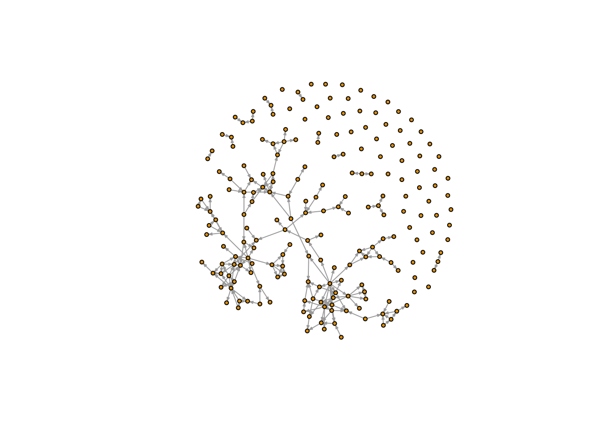

library(devtools)
install_github("Tom-Wolff/ideanet", ref = "main_dev")
library(ideanet)
library(dplyr)R Vignette
The goal of the IDEANet program is to lower the barrier of entry to network analysis for scholars interested in relational measurement. Some researchers may have data and questions that are suitable to network analysis. And yet, getting comfortable with the tools available in R can prove to be an arduous and time consuming task.
IDEANet is a set of functions which leverages existing network analysis packages in R (igraph, network, sna) to provide high quality measurements seamlessly from the starting data. The team behind IDEANet in collaboration with the Duke University Library Services have also created a repository of publicly available network datasets which researchers can pull from or host their own data. If you are interested in hosting your own data, feel free to fill out the form available on our Database page.
IDEANet is supported by the National Science Foundation as part of the Human Networks and Data Science - Infrastructure program (BCS-2024271 and BCS-2140024).
Getting Set Up
Lets begin by importing IDEANet. IDEANet is currently available only as a Github package and requires a direct download using devtools.
In this vignette, we will be using the datasets included with the package. IDEANet comes with a variety of datasets we can explore using the data() function
data(package = "ideanet")In this vignette, we will use the Fauxmesa dataset. The data represents a simulation of friendships among students in a school. The data are directed, unweighted and contain a single layer of friendships. We also know some things about these students – what grade they are in (“grade”), what race they identify with (“race”) and what sex they identify with (“sex”).
data(fauxmesa)
head(fauxmesa_edges) from to
1 1 25
2 1 52
3 1 58
4 1 70
5 1 87
6 1 92head(fauxmesa_nodes) id grade race sex
1 1 7 Hisp F
2 2 7 Hisp F
3 3 11 NatAm M
4 4 8 Hisp M
5 5 10 White F
6 6 10 Hisp FThis data is amenable to network analysis. But the implementation of network analysis in R is far from straightforward: the available tools in R are shared between several packages, each with their own strengths and weaknesses. This breadth of options can make it difficult to produce reliable results by making the correct function for a given measurement difficult to identify and, at worst, packages conflicting with each other and relying on different assumptions about the data. For many researchers, this can prove to be an effective deterrent when engaging in network analysis.
IDEANet allows the researcher to directly input their data and retrieve high-quality measurement in a format that facilitates subsequent analysis.
Reading in Files: Netread()
Alternatively, the user can import their own data. IDEANet provides a useful module that ingests a variety of data formats and converts them to a shape expected by further IDEANet modules. This module can accept csv, excel (.xls, .xlsx), igraph, network or sna (for network objects), pajek and ucinet files.
For excel and csv files, more information about the number of sheets and the use of variable names in the first row can be included. In this example, we import a csv file that contains an edgelist and its accompanying nodelist.
rm(list=ls())
netread(path = "/Users/gabe/Documents/Projects/IDEAnet/data/edges_ideanet_test.csv",
filetype = "csv",
format = "edgelist",
net_name = "testnetwork",
nodelist = "/Users/gabe/Documents/Projects/IDEAnet/data/nodes_ideanet_test.csv")The result are two objects, an edgelist and nodelist, that can be used directly in the central netwrite() function. More information can be found in the documentation using ?netread()
Core Analysis: Netwrite()
Running netwrite()
The central analysis component of IDEANet is accessed via the netwrite() function. netwrite() comes with a breadth of arguments described in the netwrite() documentation. The documentation can be accessed with the following code, or by via our webpage (link).
?netwrite()Returning to our high-school example, we can ask IDEANet to return basic network measurements on the network by including some basic arguments: what kind of network object we are using – in this case, an edgelist – and some information about sources, targets and their directionality.
rm(list=ls())
data(fauxmesa)
netwrite(data_type = "edgelist",
i_elements = fauxmesa_edges$from,
j_elements = fauxmesa_edges$to,
directed = T)(Bonacich power centrality) Adjacency matrix for network is singular. Network will be treated as undirected in order to calculate measures
(Bonacich power centrality) Adjacency matrix for network is singular. Network will be treated as undirected in order to calculate measures(Eigenvector centrality) Adjacency matrix for network is singular. Network will be treated as undirected in order to calculate measures(Eigenvector centrality) Network consists of 2+ unconnected components. Eigenvector centrality scores will be calculated for nodes based on their position within their respective components.Warning in igraph::centralization.evcent(g_no_iso, directed = TRUE, normalized
= TRUE): At core/centrality/centrality_other.c:329 : graph is directed and
acyclic; eigenvector centralities will be zeros.Warning in k_cohesion(graph = g): Graph will be treated as undirected for
calculation of k-core cohesion measure.netwrite() includes a series of warnings that warns you about the way certain measurements are calculated. In this case, while most metrics are calculated as directed (as we requested in the function), some functions such as power centrality and eigenvector centrality require interpreting the network as undirected.
While this successfully returned the metric we will be exploring further in this vignette, netwrite() has additional quality of life arguments that we can use with our example. For example, we want to include node level attributes and change the name of our output network.
However, notice that there are students in our nodelist that don’t exist in our edgelist.
setdiff(fauxmesa_nodes$id, fauxmesa_edges$from) %>% head()[1] 3 4 6 7 10 12In this case, netwrite() will consider additional student’s as isolates in the network.
rm(list=ls()) # get a clean slate
data(fauxmesa) # bring in our data again
netwrite(data_type = "edgelist",
i_elements = fauxmesa_edges$from,
j_elements = fauxmesa_edges$to,
directed = T,
nodelist = fauxmesa_nodes,
node_id = "id",
net_name = "fauxmesa_network")(Bonacich power centrality) Isolates detected in network. Isolates will be removed from network when calculating power centrality measure, and will be assigned NA values in final output.(Bonacich power centrality) Adjacency matrix for network is singular. Network will be treated as undirected in order to calculate measures(Bonacich power centrality) Isolates detected in network. Isolates will be removed from network when calculating power centrality measure, and will be assigned NA values in final output.(Bonacich power centrality) Adjacency matrix for network is singular. Network will be treated as undirected in order to calculate measures(Eigenvector centrality) Isolates detected in network. Isolates will be removed from network when calculating eigenvector centrality measure, and will be assigned NA values in final output.(Eigenvector centrality) Adjacency matrix for network is singular. Network will be treated as undirected in order to calculate measures(Eigenvector centrality) Network consists of 2+ unconnected components. Eigenvector centrality scores will be calculated for nodes based on their position within their respective components.Warning in igraph::centralization.evcent(g_no_iso, directed = TRUE, normalized
= TRUE): At core/centrality/centrality_other.c:329 : graph is directed and
acyclic; eigenvector centralities will be zeros.Warning in k_cohesion(graph = g): Graph will be treated as undirected for
calculation of k-core cohesion measure.netwrite() interpretation
netwrite() offers a variety of outputs that facilitate a clear interpretation of the network structure. Starting from the top, the output contains system level measures that tell the researcher about the network’s overall characteristics.
system_measure_plot
These measurements are also available in traditional table form.
system_level_measures %>% rmarkdown::paged_table()netwrite() also outputs a graph object that contains each node and edge-level measurement computed within the function. This graph object allows for traditional network manipulation, such as plotting.
plot(fauxmesa_network, vertex.label = NA, vertex.size = 3, edge.arrow.size = 0.2)
Note that the output network can contain both isolates and self-loops. Isolates were included when we defined a list of node ids (including isolate) in the “nodelist” argument of netwrite(). There is currently no method for removing self-loops within netwrite() - instead, the user is expected to remove any unwanted edges before reading them into netwrite().
In addition to the full network, researchers may be interested in the shape of major sub-components. netwrite() outputs two additional graph objects: the largest component in the network.
plot(largest_component, vertex.label = NA, vertex.size = 3, edge.arrow.size = 0.2,
main = "largest component")
And the largest bi-component of the network.
plot(largest_bi_component, vertex.label = NA, vertex.size = 3, edge.arrow.size = 0.2,
main = "largest bi-component")netwrite() also outputs an edgelist dataframe of the same length as the input edges. This edgelist object contains unique dyad-level ids, internal ego and alter ids, the original id values and weights (uniformly set to 1 if no weights are defined).
head(edgelist) %>% rmarkdown::paged_table()Lastly, netwrite() returns measurement at the node level as a dataframe of values and a plot of distributions. Certain measurements are computed only under certain weight and edge direction conditions - that is, the nodelist only contains measurements appropriate to the network features.
head(node_measures) %>% rmarkdown::paged_table()node_measure_plot
Multilayered networks
IDEANet can also handle multilayered networks. For example, we may be interested in both marriage and business between elite Florentine families that gave rise to the prominence of the house of Medici. This data is available in the IDEANet package and contains a layer column that indicates if the relationships are marriage ties or business ties.
rm(list=ls()) # get a clean slate
data(florentine) # bring in our florentine families data
florentine <- florentine %>%
mutate(layer = case_when(layer == 1 ~ "marriage", T ~ "business"))
head(florentine, 10) node target weight layer
1 0 8 1 marriage
2 1 5 1 marriage
3 1 6 1 marriage
4 1 8 1 marriage
5 2 4 1 marriage
6 2 8 1 marriage
7 2 4 1 business
8 2 5 1 business
9 2 8 1 business
10 2 10 1 businessTaking advantage of these layers in netwrite() is easy: just indicate which column contains your layer information using the type argument.
netwrite(data_type = "edgelist",
i_elements = florentine$node,
j_elements = florentine$target,
directed = F,
type = florentine$layer, # indicate layer variable
net_name = "florentine_network")Processing network for edge type marriageProcessing network for edge type business(Bonacich power centrality) Isolates detected in network. Isolates will be removed from network when calculating power centrality measure, and will be assigned NA values in final output.
(Bonacich power centrality) Isolates detected in network. Isolates will be removed from network when calculating power centrality measure, and will be assigned NA values in final output.(Eigenvector centrality) Isolates detected in network. Isolates will be removed from network when calculating eigenvector centrality measure, and will be assigned NA values in final output.Processing aggregate network of all edge typesJoining with `by = join_by(id, attr)`
Joining with `by = join_by(id, attr)`Running netwrite() on multi-layered network will yield some additional warnings that netwrite() is being computed on each layer separately, and on a network containing aggregated layers.
When given a multi-layered network to work with, netwrite() will return the outputs described previously in slightly different ways. First, we can see that the edgelist object contains every type of tie, and comes paired with a list object edgelists_list that separates each type of connection into their own edgelist.
head(edgelist) %>% rmarkdown::paged_table()summary(edgelist_list) Length Class Mode
summary_graph 7 data.frame list
marriage 6 data.frame list
business 6 data.frame listThe same is true of the node_measures object and its associated list object node_measures_list. For node measurements, variables with no tie-type prefix are calculated using every type of tie, while measurements calculated on a specific sub-network have the associated tie-type prefix. For example, in this example we see 3 different values for total degree, one for marriage ties, one for business ties and a value without prefix that represents the metric for the aggregate network.
node_measures %>%
dplyr::select(id, total_degree, marriage_total_degree, business_total_degree) %>%
rmarkdown::paged_table()Every other expected output are constructed as list objects and have the “_list” suffix. Lists can be accessed to access metric at different layers of the network, or the network with aggregated layers. For example, we can access the “network_list” object and extract the three layer-associated graphs.
summary(network_list) # Check in which position each sub-network is Length Class Mode
summary_graph 15 igraph list
marriage 15 igraph list
business 15 igraph listpar(mfrow = c(2, 2), mar = c(1, 1, 1, 1))
set.seed(123)
plot(network_list$summary_graph, vertex.label = NA, vertex.size = 4, edge.arrow.size = 0.2,
vertex.color = "red", main = "Aggregate network")
plot(network_list$marriage, vertex.label = NA, vertex.size = 4, edge.arrow.size = 0.2,
vertex.color = "gray", main = "Marriage network")
plot(network_list$business, vertex.label = NA, vertex.size = 4, edge.arrow.size = 0.2,
vertex.color = "green", main = "Business network")Analysis Modules
IDEANet also includes an analysis component. Individual analysis modules allow the researcher to take the output of the core netwrite() function and apply network-centric models, considerably expanding possibilities for interpretation. Currently, the Multiple Regression Quadratic Assignment Procedure (MRQAP) and Role-Analysis modules are available. We expect to expand the number of models as development on IDEANet move forward.
MRQAP
MRQAP is an extension of the Mantel test which uses node-permutation in order to get around issues of non-independence that make a traditional regression analysis difficult when using network data. This module can be useful if the researcher has a question about the probability of a tie existing or the likelihood that tie will have a specific dyadic feature.
For example, we may be interested in the following question about adolescent friendships in high-school: Is being of the same self-identified sex (e.g., sex homophily) increase the likelihood of a relationship? Are white students more likely to be friends with other white students (e.g., race homophily)?
First, let’s reset our environment and return to the high-school data introduced earlier in the vignette:
rm(list=ls()) # get a clean slate
data(fauxmesa)
netwrite(data_type = "edgelist",
i_elements = fauxmesa_edges$from,
j_elements = fauxmesa_edges$to,
directed = T,
nodelist = fauxmesa_nodes,
node_id = "id",
net_name = "fauxmesa_network")(Bonacich power centrality) Isolates detected in network. Isolates will be removed from network when calculating power centrality measure, and will be assigned NA values in final output.(Bonacich power centrality) Adjacency matrix for network is singular. Network will be treated as undirected in order to calculate measures(Bonacich power centrality) Isolates detected in network. Isolates will be removed from network when calculating power centrality measure, and will be assigned NA values in final output.(Bonacich power centrality) Adjacency matrix for network is singular. Network will be treated as undirected in order to calculate measures(Eigenvector centrality) Isolates detected in network. Isolates will be removed from network when calculating eigenvector centrality measure, and will be assigned NA values in final output.(Eigenvector centrality) Adjacency matrix for network is singular. Network will be treated as undirected in order to calculate measures(Eigenvector centrality) Network consists of 2+ unconnected components. Eigenvector centrality scores will be calculated for nodes based on their position within their respective components.Warning in igraph::centralization.evcent(g_no_iso, directed = TRUE, normalized
= TRUE): At core/centrality/centrality_other.c:329 : graph is directed and
acyclic; eigenvector centralities will be zeros.Warning in k_cohesion(graph = g): Graph will be treated as undirected for
calculation of k-core cohesion measure.By adding a nodelist to our netwrite() function, we automatically add race and gender variables to the outputted network object.
igraph::V(fauxmesa_network)$race %>% head()[1] "Hisp" "Hisp" "NatAm" "Hisp" "White" "Hisp" igraph::V(fauxmesa_network)$sex %>% head()[1] "F" "F" "M" "M" "F" "F"We have information about student’s race and sex at the node level; however, MRQAP expects all information to be dyadic - in other words, we need to move from individual level information to comparisons between student’s in the relationships. For example, we may want to know if the sex of two students in a relationships is the same or not. For our second question, we only want to know if both students are white, not if they share the same race in general.
To make this reformatting step more accessible, IDEANet offer the qap_setup() function. This function can work independently of the netwrite() output, although we recommend its output as the input for all analysis modules.
qap_setup(net = fauxmesa_network,
variables = c("race", "sex"),
methods = c("multi_category", "reduced_category"),
directed = T)qap_setup() provides three possible methods for transforming data:
“multi_category”: Applies to categorical variables only. It creates as many variables as there are unique values; each variable signals if both ego and alter have the given value.
“reduced_category”: Applies to categorical variables only. Creates a single variable that signals if alter and ego have the same value.
“both”: Applies to categorical variables only. Computes both the “multi_category” and “reduced_category” methods.
“difference”: Applies to numeric variables only. Computes the difference in input value between ego and alter.
qap_setup() produces a list object qap_results that contains:
An igraph object that includes the newly computed edge variables
A nodelist
An edgelist that includes the newly computed edge variables.
summary(qap_results) Length Class Mode
[1,] 205 igraph list
[2,] 31 data.frame list
[3,] 13 data.frame listqap_results[[3]] %>% rmarkdown::paged_table()qap_setup() function returns several new variables. Variables appended with “_ego” and “_alter” represent the original values pulled from the nodelist. Since we associated our race variable with the multi-categorymethod, qap_setup() also returned a variable that indicates if both ego and alter share that particular racial identification. Since we associated the sex variable with the reduced-category method, we receive a single variable that indicates if ego and alter share the same sex.
With our variables of interest in hand, we can turn to the MRQAP analysis itself. The IDEANet MRQAP module provides the qap_run() function which integrates seamlessly with the output from netwrite() and qap_setup(). Arguments for qap_run() toggles for the number of permutations and the family of the model (currently, linear and binomial). See function description for more information. If the dependent argument is left NULL, the function defaults to predicting the probability of tie.
NOTE: Binomial MRQAP is very sensitive to model specification; for exploratory purposes, it is recommended to stick to a linear functional form. We significantly decrease the number of permutations to allow for lower computation times, though this may make our confidence intervals less interpretable.
qap_run(net = qap_results[[1]],
variables = c("same_sex", "both_race_White"),
dependent = NULL,
directed = T,
family = "linear")
model_results[[1]]# A tibble: 3 × 3
covars estimate pvalue
<chr> <dbl> <dbl>
1 intercept 0.00170 0.79
2 same_sex 0.993 0
3 both_race_White 0.254 0 The MRAQP analysis through qap_run() outputs a list of two objects. The first contains a summary of model results akin to a traditional regression output. In this analysis, it is clear that sharing the same sex is very predictive of having a shared tie in this high-school. Both students being white is also predictive, although not at the same magnitude.
Role Analysis
@Tom Wolff